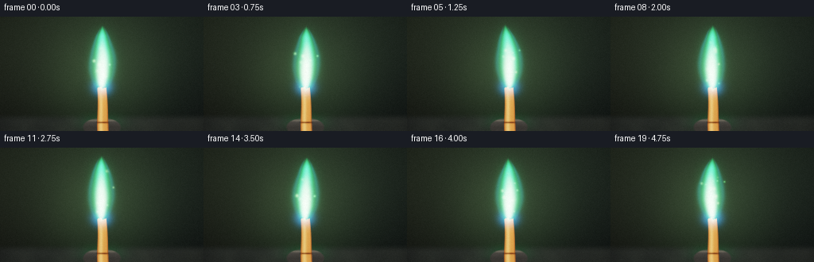
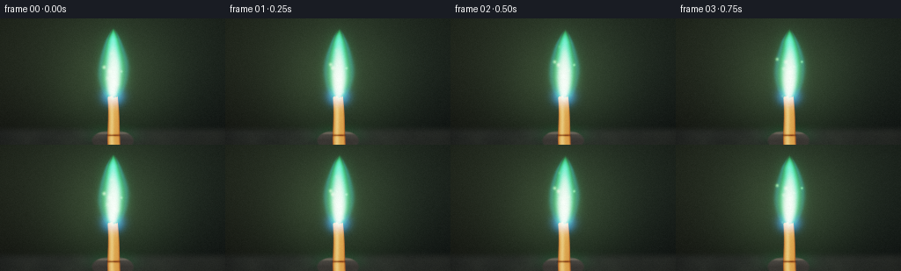

CODING AGENTS AS PIXEL WORLD MODELS
traex/DeepSeek-V4.1-Flash · phygen_126
点击播放 · 原生 RGB 像素
逐轮保存的候选
回放视频、检查图与代码变化。
每份候选均可单独播放。实际图片检查记录在下方工具轨迹中。
候选 01播放与检查图
点击播放 · 原生 RGB 像素


展开代码变化
--- 上一保存版本
+++ 本次保存版本
@@ -0,0 +1,335 @@
+"""Procedural copper-combustion video for PixelWorld."""
+
+from pathlib import Path
+
+import numpy as np
+from scipy.ndimage import gaussian_filter, map_coordinates
+
+import artifact_io
+
+
+WIDTH = 256
+HEIGHT = 144
+FRAME_COUNT = 20
+FPS = 4.0
+SUPERSAMPLE = 3
+RW = WIDTH * SUPERSAMPLE
+RH = HEIGHT * SUPERSAMPLE
+
+
+def smoothstep(edge0, edge1, value):
+ t = np.clip((value - edge0) / (edge1 - edge0), 0.0, 1.0)
+ return t * t * (3.0 - 2.0 * t)
+
+
+def make_lattice(shape, seed):
+ rng = np.random.default_rng(seed)
+ return rng.random(shape, dtype=np.float32)
+
+
+def sample_lattice(lattice, x, y, t):
+ t_span = lattice.shape[0] - 1.001
+ y_span = lattice.shape[1] - 1.001
+ x_span = lattice.shape[2] - 1.001
+ coords = np.array(
+ [
+ np.full_like(x, np.clip(t, 0.0, t_span)),
+ np.clip(y, 0.0, y_span),
+ np.clip(x, 0.0, x_span),
+ ]
+ )
+ return map_coordinates(lattice, coords, order=1, mode="reflect")
+
+
+NOISE_LAYERS = (
+ (make_lattice((10, 15, 25), 31), 52.0, 0.52),
+ (make_lattice((12, 25, 42), 47), 26.0, 0.31),
+ (make_lattice((14, 48, 80), 73), 13.0, 0.17),
+)
+
+
+def fractal_noise(X, Y, time_s, seed_shift=0.0, rise=1.0):
+ """Animated, upward-advected 3D value noise in [0, 1]."""
+ total = np.zeros_like(X, dtype=np.float32)
+ weight_sum = 0.0
+ for layer_index, (lattice, scale, weight) in enumerate(NOISE_LAYERS):
+ t = time_s / 5.0 * (lattice.shape[0] - 1.001) * (0.88 + layer_index * 0.1)
+ x = X / scale + seed_shift
+ y = Y / scale + time_s * rise * (0.82 + layer_index * 0.14) + seed_shift * 0.7
+ total += weight * sample_lattice(lattice, x, y, t)
+ weight_sum += weight
+ return total / weight_sum
+
+
+def filmic_tonemap(color):
+ color = np.maximum(color, 0.0)
+ return np.clip(
+ (color * (2.51 * color + 0.03)) / (color * (2.43 * color + 0.59) + 0.14),
+ 0.0,
+ 1.0,
+ )
+
+
+def add_light(canvas, light, x, y, radius, color):
+ dx = X_GLOBAL - x
+ dy = Y_GLOBAL - y
+ spot = np.exp(-(dx * dx + dy * dy) / (2.0 * radius * radius))
+ canvas += spot[..., None] * np.asarray(color, dtype=np.float32) * light
+
+
+Y_GLOBAL, X_GLOBAL = np.mgrid[0:RH, 0:RW].astype(np.float32)
+Y_GLOBAL /= SUPERSAMPLE
+X_GLOBAL /= SUPERSAMPLE
+
+
+def render_background(time_s):
+ v = Y_GLOBAL / HEIGHT
+ u = X_GLOBAL / WIDTH
+ n_soft = fractal_noise(X_GLOBAL, Y_GLOBAL, 0.0, seed_shift=4.3, rise=0.0)
+
+ bg = np.empty((RH, RW, 3), dtype=np.float32)
+ bg[..., 0] = 0.009 + 0.015 * (1.0 - v) + 0.006 * (1.0 - u)
+ bg[..., 1] = 0.013 + 0.021 * (1.0 - v) + 0.004 * (1.0 - u)
+ bg[..., 2] = 0.012 + 0.013 * (1.0 - v)
+
+ # Soft atmospheric warmth and a green combustion cast.
+ dx = (X_GLOBAL - 128.0) / 92.0
+ dy = (Y_GLOBAL - 69.0) / 94.0
+ atmosphere = np.exp(-(dx * dx + dy * dy) * 1.8)
+ bg[..., 0] += atmosphere * (0.020 + 0.006 * n_soft)
+ bg[..., 1] += atmosphere * (0.032 + 0.009 * n_soft)
+ bg[..., 2] += atmosphere * (0.017 + 0.004 * n_soft)
+
+ # Dark refractory bench with a shallow, glossy reflection under the sample.
+ bench = smoothstep(121.0, 132.0, Y_GLOBAL)
+ grain = fractal_noise(X_GLOBAL * 1.7, Y_GLOBAL * 2.2, 0.0, seed_shift=13.0, rise=0.0)
+ bench_color = np.stack(
+ (
+ 0.026 + 0.018 * grain,
+ 0.029 + 0.020 * grain,
+ 0.027 + 0.015 * grain,
+ ),
+ axis=-1,
+ )
+ bg = bg * (1.0 - bench[..., None]) + bench_color * bench[..., None]
+
+ reflection = np.exp(-((X_GLOBAL - 128.0) / 24.0) ** 2)
+ reflection *= np.exp(-((Y_GLOBAL - 133.0) / 9.0) ** 2)
+ bg[..., 1] += reflection * 0.045
+ bg[..., 2] += reflection * 0.012
+
+ # Restrained vignette and fine haze keep the sample as the focal point.
+ vx = (X_GLOBAL - WIDTH * 0.5) / (WIDTH * 0.62)
+ vy = (Y_GLOBAL - HEIGHT * 0.48) / (HEIGHT * 0.62)
+ vignette = np.clip(1.0 - 0.34 * (vx * vx + vy * vy), 0.56, 1.0)
+ bg *= vignette[..., None]
+
+ drift = 0.35 * np.sin(time_s * 0.52)
+ bg[..., 1] += 0.0025 * np.exp(-((X_GLOBAL - 128.0 - drift) / 70.0) ** 2)
+ return bg
+
+
+def render_holder(canvas):
+ # A low graphite sample stand, mostly hidden by the copper strip and flame glow.
+ ex = (X_GLOBAL - 128.0) / 24.0
+ ey = (Y_GLOBAL - 139.0) / 12.0
+ body = smoothstep(1.08, 0.86, ex * ex + ey * ey)
+ body *= smoothstep(126.5, 131.0, Y_GLOBAL)
+ if np.max(body) <= 0.0:
+ return canvas
+
+ grain = fractal_noise(X_GLOBAL * 3.0, Y_GLOBAL * 4.0, 0.0, seed_shift=21.0, rise=0.0)
+ shade = 0.035 + 0.030 * np.clip((139.0 - Y_GLOBAL) / 12.0, 0.0, 1.0)
+ holder_rgb = np.stack(
+ (
+ shade * 1.10 + grain * 0.012,
+ shade * 1.04 + grain * 0.011,
+ shade * 0.94 + grain * 0.009,
+ ),
+ axis=-1,
+ )
+ rim = np.exp(-((Y_GLOBAL - 130.4) / 1.4) ** 2) * np.exp(-((X_GLOBAL - 128.0) / 23.0) ** 4)
+ holder_rgb += rim[..., None] * np.array([0.055, 0.048, 0.035], dtype=np.float32)
+ canvas *= 1.0 - body[..., None]
+ canvas += holder_rgb * body[..., None]
+ return canvas
+
+
+def render_copper(canvas, time_s):
+ top_y = 89.4 + 1.0 * np.sin((X_GLOBAL - 128.0) * 0.74) + 0.55 * np.sin((X_GLOBAL - 128.0) * 1.63)
+ xc = 128.0 + 0.032 * (Y_GLOBAL - 90.0) + 0.45 * np.sin((Y_GLOBAL - 90.0) * 0.095)
+ half_width = 6.0 + 1.55 * np.clip((Y_GLOBAL - 90.0) / 47.0, 0.0, 1.0)
+ inside = (Y_GLOBAL >= top_y) & (Y_GLOBAL <= 139.5) & (np.abs(X_GLOBAL - xc) <= half_width)
+ edge_fade = smoothstep(0.0, 0.75, half_width - np.abs(X_GLOBAL - xc))
+ tip_fade = smoothstep(-0.7, 0.8, Y_GLOBAL - top_y)
+ alpha = edge_fade * tip_fade
+
+ d = np.clip((X_GLOBAL - xc) / np.maximum(half_width, 0.1), -1.0, 1.0)
+ cross_shade = 0.30 + 0.56 * np.sqrt(np.clip(1.0 - d * d, 0.0, 1.0))
+ broad_highlight = np.exp(-((d + 0.30) / 0.30) ** 2)
+ edge_dark = np.exp(-((np.abs(d) - 0.90) / 0.11) ** 2)
+ striation = fractal_noise(X_GLOBAL * 4.2, Y_GLOBAL * 0.85, 0.0, seed_shift=27.0, rise=0.0)
+ micro = fractal_noise(X_GLOBAL * 10.0, Y_GLOBAL * 4.0, 0.0, seed_shift=35.0, rise=0.0)
+
+ copper = np.empty((RH, RW, 3), dtype=np.float32)
+ copper[..., 0] = 0.38 + 0.50 * cross_shade + 0.38 * broad_highlight + 0.07 * striation
+ copper[..., 1] = 0.085 + 0.235 * cross_shade + 0.24 * broad_highlight + 0.025 * micro
+ copper[..., 2] = 0.025 + 0.060 * cross_shade + 0.09 * broad_highlight + 0.010 * micro
+ copper *= (0.72 + 0.30 * micro)[..., None]
+ copper *= (1.0 - 0.54 * edge_dark)[..., None]
+
+ # Heat travels a short distance into the strip; the torn tip approaches white-hot.
+ depth = np.maximum(Y_GLOBAL - top_y, 0.0)
+ heat = np.exp(-depth / 8.6) * (0.86 + 0.14 * np.sin(time_s * 3.1))
+ copper += heat[..., None] * np.array([0.72, 0.14, 0.018], dtype=np.float32)
+ copper += (heat ** 2.4)[..., None] * np.array([0.95, 0.55, 0.17], dtype=np.float32)
+
+ # Cool green reflections from the flame travel down both metal edges.
+ green_reflection = np.exp(-depth / 22.0) * (0.30 + 0.70 * np.abs(d) ** 3)
+ copper += green_reflection[..., None] * np.array([0.010, 0.085, 0.030], dtype=np.float32)
+
+ canvas *= 1.0 - alpha[..., None]
+ canvas += copper * alpha[..., None]
+
+ # The strip disappears into a narrow dark slot in the stand.
+ slot = np.exp(-((Y_GLOBAL - 133.1) / 1.25) ** 2) * np.exp(-((X_GLOBAL - xc) / 7.5) ** 6)
+ canvas *= 1.0 - 0.82 * slot[..., None]
+ return canvas
+
+
+def render_flame(time_s):
+ n_big = fractal_noise(X_GLOBAL, Y_GLOBAL, time_s, seed_shift=1.7, rise=1.10)
+ n_mid = fractal_noise(X_GLOBAL, Y_GLOBAL, time_s * 1.08, seed_shift=8.2, rise=1.34)
+ n_fine = fractal_noise(X_GLOBAL, Y_GLOBAL, time_s * 1.17, seed_shift=15.4, rise=1.62)
+
+ x0 = 128.0 + 0.65 * np.sin(time_s * 1.42) + 0.25 * np.sin(time_s * 3.37 + 0.6)
+ y0 = 91.7
+ tip_y = 12.0
+ h = (y0 - Y_GLOBAL) / (y0 - tip_y)
+ h_warped = h + (n_big - 0.5) * (0.075 + 0.035 * np.clip(h, 0.0, 1.0))
+ hc = np.clip(h_warped, 0.0, 1.0)
+
+ envelope = np.sin(np.pi * np.clip(h_warped * 0.91 + 0.035, 0.0, 1.0))
+ width = (2.0 + 15.5 * np.power(np.maximum(envelope, 0.0), 0.72)) * np.power(
+ np.maximum(1.0 - hc, 0.0), 0.32
+ )
+ center = x0 + (
+ 2.3 * np.sin(time_s * 2.12 + hc * 1.75)
+ + 1.1 * np.sin(time_s * 4.45 + hc * 4.1 + 0.8)
+ ) * np.power(hc, 0.72)
+ warp = (n_big - 0.5) * 8.8 * np.power(hc, 1.08)
+ warp += (n_mid - 0.5) * 2.8
+
+ q = (X_GLOBAL - center - warp) / np.maximum(width, 0.38)
+ q += (n_fine - 0.5) * 0.16
+ vertical_fade = 1.0 - smoothstep(0.80, 1.04, h_warped)
+ base_fade = smoothstep(-0.055, 0.075, h_warped)
+ flame_mask = vertical_fade * base_fade
+
+ body = np.exp(-(q * q) * 2.55) * flame_mask
+ body *= 0.70 + 0.46 * n_mid
+
+ # One softer, offset tongue gives the plume a lively asymmetric crown.
+ tongue_side = 0.55 * np.sin(time_s * 1.17 + 0.4)
+ tongue_center = center + tongue_side * width * 0.70
+ tongue_width = np.maximum(width * 0.50, 0.8)
+ tongue_q = (X_GLOBAL - tongue_center + 1.7 * (n_big - 0.5)) / tongue_width
+ tongue = np.exp(-(tongue_q * tongue_q) * 3.8)
+ tongue *= np.exp(-((hc - 0.46) / 0.28) ** 2) * flame_mask * 0.34
+
+ outer = np.clip(body + tongue, 0.0, 1.5)
+ middle = np.power(np.clip(body + 0.55 * tongue, 0.0, 1.0), 1.72)
+ core = np.exp(-(q * q) * 8.5) * np.exp(-((hc - 0.23) / 0.31) ** 2)
+ core *= smoothstep(-0.04, 0.10, h_warped) * (1.0 - smoothstep(0.64, 0.92, h_warped))
+ blue_base = np.exp(-((Y_GLOBAL - 88.4) / 8.2) ** 2)
+ blue_base *= np.exp(-((X_GLOBAL - x0) / 9.5) ** 2) * 0.54
+
+ flicker = 0.94 + 0.055 * np.sin(time_s * 8.3) + 0.025 * np.sin(time_s * 13.7 + 1.1)
+ emission = np.zeros((RH, RW, 3), dtype=np.float32)
+ emission += outer[..., None] * np.array([0.012, 0.29, 0.105], dtype=np.float32) * 1.22
+ emission += middle[..., None] * np.array([0.055, 0.82, 0.285], dtype=np.float32) * 1.62
+ emission += core[..., None] * np.array([0.70, 1.00, 0.60], dtype=np.float32) * 2.35
+ emission += blue_base[..., None] * np.array([0.05, 0.37, 0.82], dtype=np.float32)
+ emission *= flicker
+
+ # A cool cyan fringe separates the hot plume from the dark background.
+ fringe = np.exp(-((np.abs(q) - 1.03) / 0.19) ** 2)
+ fringe *= flame_mask * (0.18 + 0.35 * np.clip(hc, 0.0, 1.0))
+ emission += fringe[..., None] * np.array([0.01, 0.13, 0.16], dtype=np.float32)
+ return emission
+
+
+def add_embers(emission, time_s):
+ spark_rng = np.random.default_rng(104)
+ count = 13
+ for index in range(count):
+ period = spark_rng.uniform(2.2, 4.2)
+ phase = spark_rng.uniform(0.0, period)
+ age = ((time_s + phase) % period) / period
+ lifetime = np.sin(np.pi * age) ** 0.62
+ start_x = 128.0 + spark_rng.uniform(-5.0, 5.0)
+ drift = spark_rng.uniform(-13.0, 13.0)
+ speed = spark_rng.uniform(43.0, 72.0)
+ x = start_x + drift * age + 2.1 * np.sin(time_s * 5.1 + index)
+ y = 91.0 - speed * age + 4.0 * age * age
+ radius = spark_rng.uniform(0.55, 1.35) * (0.75 + 0.35 * lifetime)
+ strength = spark_rng.uniform(0.30, 1.05) * lifetime
+ warm = spark_rng.uniform(0.0, 0.32)
+ color = np.array(
+ [0.23 + warm, 1.05 - warm * 0.55, 0.31 + warm * 0.18],
+ dtype=np.float32,
+ )
+ add_light(emission, strength, x, y, radius, color)
+ return emission
+
+
+def add_smoke(canvas, time_s):
+ n = fractal_noise(X_GLOBAL * 0.8, Y_GLOBAL * 0.72, time_s * 0.56, seed_shift=31.0, rise=0.72)
+ dx = (X_GLOBAL - 128.0 - 2.0 * np.sin(time_s * 0.8)) / 26.0
+ dy = (Y_GLOBAL - 25.0) / 43.0
+ wisp = np.exp(-(dx * dx + dy * dy) * 2.0)
+ wisp *= smoothstep(0.18, 0.72, n) * smoothstep(73.0, 24.0, Y_GLOBAL)
+ wisp *= 0.045
+ canvas *= 1.0 - wisp[..., None] * 0.34
+ canvas += wisp[..., None] * np.array([0.050, 0.065, 0.054], dtype=np.float32)
+ return canvas
+
+
+def render_frame(frame_index):
+ time_s = frame_index / FPS
+ canvas = render_background(time_s)
+ canvas = render_holder(canvas)
+ canvas = render_copper(canvas, time_s)
+
+ emission = render_flame(time_s)
+ emission = add_embers(emission, time_s)
+
+ tight_glow = gaussian_filter(emission, sigma=(2.0 * SUPERSAMPLE, 2.0 * SUPERSAMPLE, 0.0))
+ wide_glow = gaussian_filter(emission, sigma=(8.5 * SUPERSAMPLE, 8.5 * SUPERSAMPLE, 0.0))
+ canvas += 0.22 * tight_glow + 0.105 * wide_glow
+ canvas += emission
+ canvas = add_smoke(canvas, time_s)
+
+ display = filmic_tonemap(canvas) ** (1.0 / 2.2)
+ display = np.clip(display, 0.0, 1.0)
+ display = display.reshape(HEIGHT, SUPERSAMPLE, WIDTH, SUPERSAMPLE, 3).mean(axis=(1, 3))
+
+ # Fine, deterministic sensor grain gives the tiny image a photographic finish.
+ rng = np.random.default_rng(5000 + frame_index)
+ grain = rng.normal(0.0, 0.0055, (HEIGHT, WIDTH, 1)).astype(np.float32)
+ display = np.clip(display + grain, 0.0, 1.0)
+ return np.round(display * 255.0).astype(np.uint8)
+
+
+def main():
+ frames = np.stack([render_frame(index) for index in range(FRAME_COUNT)])
+ case_dir = Path(__file__).resolve().parent
+ artifact_io.save(frames, case_dir)
+ print(
+ f"generated {frames.shape[0]} frames at {WIDTH}x{HEIGHT}, "
+ f"{FPS:g} fps; range {frames.min()}..{frames.max()}"
+ )
+
+
+if __name__ == "__main__":
+ main()
可观测工具轨迹
实际执行的命令与返回图片。
命令 1exit 0
/bin/bash -c "pwd && rg --files -g '"'!*.git*'"' | sed -n '1,160p'"
命令 2exit 0
/bin/bash -c "sed -n '1,240p' prompt.txt"
命令 3exit 0
/bin/bash -c "sed -n '1,300p' GENERATION_RULES.md"
命令 4exit 0
/bin/bash -c 'cat task_spec.json'
命令 5exit 0
/bin/bash -c "find . -maxdepth 2 -type f -printf '%p %s bytes\\n' | sort | sed -n '1,200p'"
命令 6exit 0
/bin/bash -c "sed -n '1,260p' artifact_io.py"
命令 7exit 0
/bin/bash -c "sed -n '1,260p' player_template.html"
命令 8exit 0
/bin/bash -c "python - <<'PY' import importlib.util for m in ['numpy','PIL','imageio','cv2','scipy','matplotlib']: print(m, bool(importlib.util.find_spec(m))) PY"
命令 9exit 1
/bin/bash -c 'python generate.py'
命令 10exit 0
/bin/bash -c 'python generate.py'
命令 11exit 0
/bin/bash -c "python - <<'PY'
from pathlib import Path
import numpy as np
from PIL import Image
fs=sorted(Path('frames').glob('*.png'))
arr=np.stack([np.asarray(Image.open(p)).astype(np.float32) for p in fs])
print('shape',arr.shape,'dtype',arr.dtype)
for i in [0,5,10,15,19]:
a=arr[i]; mx=a.max(2); green=(a[...,1]>a[...,0]*1.35)&(a[...,1]>a[...,2]*1.08)&(a[...,1]>38)
copper=(a[...,0]>a[...,1]*1.30)&(a[...,0]>a[...,2]*1.35)&(a[...,0]>45)
hot=(a.min(2)>210)
print(i,'mean',a.mean((0,1)).round(1),'max',a.max(),'green px',green.sum(),'green bbox', np.where(green)[1].min() if green.any() else None,np.where(green)[1].max() if green.any() else None,np.where(green)[0].min() if green.any() else None,np.where(green)[0].max() if green.any() else None,'copper',copper.sum(),'hot',hot.sum())
d=np.abs(np.diff(arr,axis=0)).mean((1,2,3))
print('temporal MAD',d.round(2).tolist())
print('adjacent identical',np.all(arr[1:]==arr[:-1],axis=(1,2,3)).tolist())
print('luma min/mean/max',arr.mean(3).min().round(1),arr.mean(3).mean().round(1),arr.mean(3).max().round(1))
PY"命令 12exit 0
/bin/bash -c "python - <<'PY'
from PIL import Image
im=Image.open('inspection.png')
print(im.size)
im.crop((0,0,1024,330)).save('.tmp/contact_top.png')
PY"命令 13exit 0
/bin/bash -c 'which chafa || true; which viu || true; which jp2 || true; which img2txt || true'
命令 14exit 0
/bin/bash -c "python - <<'PY'
import numpy as np
from PIL import Image
im=np.asarray(Image.open('frames/00.png')).astype(float)
# ANSI half-block preview using 32-color approximation to terminal 256 palette.
chars=' .:-=+*#%@'
for y in range(0,144,4):
row=''
for x in range(0,256,3):
b=im[y:y+4,x:x+3]
l=b.mean()
row += chars[min(9,int(l/255*10))]
print(row)
PY"命令 15exit 0
/bin/bash -c "python - <<'PY'
from PIL import Image
import numpy as np
im=np.asarray(Image.open('frames/00.png'))
for y in range(0,144,8):
print(f'y={y:3d}', end=' ')
for x in range(0,256,8):
b=im[y:y+8,x:x+8].mean((0,1)).astype(int)
print('\\x1b[48;2;%d;%d;%dm \\x1b[0m'%tuple(b),end='')
print()
PY"命令 16exit 0
/bin/bash -c "python - <<'PY'
import numpy as np
from PIL import Image
from pathlib import Path
A=np.stack([np.asarray(Image.open(p)).astype(float) for p in sorted(Path('frames').glob('*.png'))])
for i,a in enumerate(A):
m=(a[...,1]>150)&(a[...,1]>a[...,0]*1.15)&(a[...,1]>a[...,2]*1.05)
yy,xx=np.where(m)
core=(a[...,1]>205)&(a[...,1]>a[...,0]*1.08)
cy,cx=np.where(core)
print(i,'bright centroid',round(cx.mean(),1) if len(cx) else None,round(cy.mean(),1) if len(cy) else None,'bbox', (xx.min(),yy.min(),xx.max(),yy.max()) if len(xx) else None,'area',len(xx),'core area',len(cx))
# central crop movement
crop=A[:,10:100,85:175]
print('crop MAD successive',np.abs(np.diff(crop,axis=0)).mean((1,2,3)).round(2).tolist())
# row max x extents in hottest flame bands
for y in [20,40,60,80]:
vals=[]
for a in A:
line=a[y,:,1]
xs=np.where(line>120)[0]
vals.append((xs.min(),xs.max()) if len(xs) else (None,None))
print('y',y,vals[:10])
PY"命令 17exit 0
/bin/bash -c "python - <<'PY'
from pathlib import Path
from PIL import Image
import numpy as np, json
root=Path('.')
required=['generate.py','pixels.npz','inspection.png','transition_check.png','index.html']
print('required:', {p:(root/p).exists() for p in required})
frames=sorted((root/'frames').glob('*.png'))
print('frame_count',len(frames),'sizes',sorted({Image.open(p).size for p in frames}))
with np.load(root/'pixels.npz') as z:
a=z['pixels']
print('pixels.npz',a.shape,a.dtype,'minmax',int(a.min()),int(a.max()))
html=(root/'index.html').read_text()
payload=html.split('const DATA=',1)[1].split(',W=',1)[0]
data=json.loads(payload)
print('player payload', {k:data[k] for k in ('id','width','height','frames','fps','audio')}, 'deltas',len(data['deltas']))
PY"保存候选 1 份；完成命令 17 次；可验证图片返回 0 张。原始 API 响应与完整日志保留在本地。